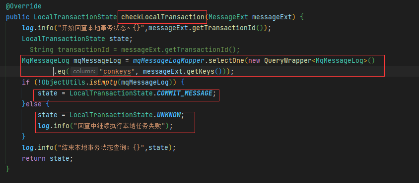

RocketMQ消息可靠性保证
消息可靠性保证
异步发送消息保证数据一致性
问题描述
消息最终一致性方案是指当事务发起方执行完成本地事务（数据库操作）后并发出一条消息给MQ，消费者一定能够接收消息并处理事务成功，强调的是只要消息发给消息消费者最终事务要达到一致。
- 首先确保本地事务与消息发送的原子性:事务发起方在本地事务执行成功后消息必须发出去，否则就丢弃消息本地事务也回滚。即实现本地事务和消息发送的原子性，要么都成功，要么都失败。本地事务与消息发送的原子性问题是实现可靠消息最终一致性方案的关键问题。
- 解决方法：本地事务包裹
- 其次确保消费者消费消息的可靠性：消费者必须能够从消息队列成功消费消息，如果接收消息失败可以重复接收消息。
- 保证消费消息的幂等性（重复消费的问题）：若某一个消费节点超时但是消费成功，此时消息中间件会重复投递此消息，就导致了消息的重复消费。要解决消息重复消费的问题就要实现事务参与方的方法幂等性。
解决方案1：本地信息表
在Producer端先进行数据库操作后发消息，即：
1 | begin transaction |
先操作数据库，数据库操作成功后再发消息，如果消息发送成功了整个事务一致性没有问题。数据库操作成功后再发消息，如果数据发送失败了整个事务也能保持一致性。但是当数据库操作成功了，发送MQ也成功了只是由于网络原因迟迟MQ没有响应，导致发送MQ超时，最终会被误认为发送失败了，最终数据库操作也回滚了，而此时消息实际已经发出去了，这就导致数据库操作和发消息不一致。所以问题是如何保证100%将消息发送成功。
保证消息100发送成功
由于网络波动等原因有可能消息是发送不成功到RocketMQ中的，或者发送成功但响应超时等，当遇到这种情况下我们就需要尝试重新发送，
- 首先将要发的消息持久化到数据库中。
- 然后发送消息到MQ中。
- 如果发送成功就删除数据库中的该条记录。
- 如果发送失败不要报错再尝试几次发送，如果都失败保存到数据库中，后面由定时器再去尝试发送。
无论是通过尝试多次发送，还是由定时任务继续补偿发送，都要保证该消息必须100%发送到MQ中。
消费时保证幂等性
消费时一般先打印一下消息内容日志，以便于排错。
消费消息需要注意幂等性，一般是先解析消息，然后根据消息的唯一条件等值去数据库中查询该消息的状态，如果是处理中或者处理完成就不需要继续处理了。
如果是消费失败，注意判断消费的次数，如果已经3次消费失败了就不再处理了，记录错误日志，由人工干预。
业务处理完了需要更新消息的状态。在更新状态的时候注意防止并发修改，使用数据库乐观锁。
当消费消息时出现错误时需要将消息的状态更新为消费失败，并累加消费失败的次数。
代码示例
发送消息：
1 |
|
消费消息：
1 |
|
解决方案2：RocketMQ事务消息
在 RocketMQ 4.3后实现了完整的事务消息，实际上是对本地消息表的一个封装，将本地消息表移动到了 MQ内部，**解决Producer 端的消息发送与本地事务执行的原子性问题(上述问题1)**。

执行流程：为方便说明我们以银行转账为例，即 bank1的张三转账给bank2的李四100元：，完整的过程是
bank1中张三账户扣除100元 并发送消息给MQ
消费者取出消息 将李四的账户增加100元。
- Producer 发送Half Message事务消息：Producer （MQ发送方）发送事务消息至MQ Server，MQ Server将消息状态标记为Prepared（预备状态），注意此时这条消息消费者（MQ订阅方）是无法消费到的。
- MQ Server回应消息发送成功：MQ Server接收到 Producer 发送给的消息则回应发送成功。表示 MQ已接收到消息。
- Producer 执行本地事务：Producer 端执行业务代码逻辑，通过本地数据库事务控制。本例中，将张三账户扣除100元。
- 消息投递：若 Producer 本地事务执行成功则自动向 MQServer发送 commit消息，MQ Server接收到 Commit消息后将“张三转账到李四” 状态标记为可消费，此时MQ订阅方（bank2）即正常消费消息。若Producer 本地事务执行失败则自动向 MQServer发送 Rollback消息，MQ Server接收到 Rollback消息后将删除“张三转账到李四”。如果消息成功投递，MQ订阅方（bank2）消费消息，消费成功则向MQ回应ack，否则将重复接收消息。这里 ack默认自动回应，即程序执行正常则自动回应ack，需要注意的是消费端要保证幂等性即不能重复消费。
- 事务回查：如果执行 Producer端本地事务过程中，执行端挂掉，或者超时，MQ Server将会不停的询问同组的其他 Producer来获取事务执行状态，这个过程叫事务回查。MQ Server会根据事务回查结果来决定是否投递消息。以上主干流程已由RocketMQ实现，对用户侧来说，用户需要分别实现本地事务执行以及本地事务回查方法，因此只需关注本地事务的执行状态（维护本地事务状态表）即可。 RoacketMQ提供 RocketMQLocalTransactionListener接口，重写executeLocalTransaction执行本地事务，checkLocalTransaction执行事务状态回查
TransactionListener说明
TransactionListener的两个接口是rocketmq二阶段执行本地事务及事务回查的入口。其返回值LocalTransactionState如下：
- COMMIT_MESSAGE：提交，本地事务执行成功，返回状态
- ROLLBACK_MESSAGE：回滚，本地事务执行失败，返回状态
- UNKNOW：未知，其它情况，返回该状态，会进行事务回查
executeLocalTransaction()方法不同返回值场景说明：
- COMMIT_MESSAGE：事务提交，消费方可以消费消息，不会执行checkLocalTransaction方法
- ROLLBACK_MESSAGE：事务回滚，消费方不会消费这条消息，不会执行checkLocalTransaction方法
- UNKNOW：开始事务回查，执行checkLocalTransaction方法
checkLocalTransaction()方法不同返回值场景说明：
- COMMIT_MESSAGE：事务提交，消费方可以消费消息，不会再执行checkLocalTransaction方法
- ROLLBACK_MESSAGE：事务回滚，消费方不会消费这条消息，不会再执行checkLocalTransaction方法
- UNKNOW：事务回查，继续执行checkLocalTransaction方法
代码示例
如果发送事务消息，在这里我们的创建的实例必须是 TransactionMQProducer，可以自定义线程池来处理检查请求
在通过 producer.sendMessageInTransaction发送事务消息后，如果消息发送成功，就会调用到下面的的executeLocalTransaction方法，来执行本地事务。在这里，它会完成本地事务和事务日志的插入。
checkLocalTransaction 方法就是用于事务状态查询。在这里，我们通过消息的唯一标识Key查询MqMessageLog这张表，如果可以查询到结果，就提交事务消息；如果没有查询到，就返回未知状态。注意，这里还涉及到另外一个问题。如果是返回未知状态，RocketMQ Broker服务器会以1分钟的间隔时间不断回查，直至达到事务回查最大检测数，如果超过这个数字还未查询到事务状态，则回滚此消息。
当然，事务回查的频率和最大次数，我们都可以配置。在 Broker 端，可以通过这样来配置它：
1 | brokerConfig.setTransactionCheckInterval(10000); //回查频率10秒一次 |

消费消息的幂等性：
解决上述问题3，发送消息重复可能有以下几个原因：
- 发送时会发送多次，由于网络原因生产者没有收到Broker的成功响应，生产者会认为发送失败还会再尝试发送。
- 消息投递时重复投递，由于程序bug导致。
- 负载均衡，当某个消费者突然宕机了，消费的负载均衡会重新分配，可能会造成重复消费。
消费消息的幂等性是指同一个消息无论消费多少次对最终的结果都是一致的。那么我们如何保障消费多次和消费一次的结果完全一样呢？那就是在消费者消费消息之前首先就要判断该消息是否已经消费了！那如何判断是否消费过呢？这就需要在发送消息时将该消息保存到数据库，数据库表中包含消费状态字段，如果查询数据库中改消息已经消费过了那就直接return了，后面的逻辑不需要再执行了。那查询数据库数据的唯一条件是什么呢？注意：RocketMQ不能保证msgId字段的唯一，所以通过msgId处理消费幂等性不靠谱，可以通过 topic + tag + key(业务key，业务唯一的标识，如订单号等,本项目中是采用UUID实现的)。
解决消息丢失
生产者消息丢失
消息在生产者就丢失了说明没有成功发送到broker中，原因可能是程序发送失败抛出异常之后没有做重试处理，同步方式由于采用阻塞的方式不会出现这种问题。对于异步发送方式导致的丢失我们可以采用以下方案：
异步发送+回调通知+本地数据库存储消息表
举例：
- 用户点赞后先保存本地数据和MQ消息表，这时候消息的状态是发送中，如果本地事务失败，那么点赞失败，事务回滚。
- 点赞成功，直接返回客户端成功，异步发送MQ消息
- MQ回调通知消息发送结果，对应更新数据库MQ发送状态
- Job轮询超过一定时间（时间根据业务配置）还未发送成功的消息去重试
- 在监控平台配置或者Job程序处理超过一定次数一直发送不成功的消息，告警，人工介入。
对于大部分异步方式来说，回调的方式就足以解决消息丢失问题。
RocketMQ分为同步刷盘和异步刷盘两种方式，默认的是异步刷盘，就有可能导致消息还未刷到硬盘上就丢失了，可以通过设置为同步刷盘的方式来保证消息可靠性，这样即使MQ挂了，恢复的时候也可以从磁盘中去恢复消息。
MQ消息丢失：
如果生产者保证消息发送到MQ，而MQ收到消息后还在内存中，这时候宕机了又没来得及同步给从节点，就有可能导致消息丢失。
RocketMQ分为同步刷盘和异步刷盘两种方式，默认的是异步刷盘，就有可能导致消息还未刷到硬盘上就丢失了，可以通过设置为同步刷盘的方式来保证消息可靠性，这样即使MQ挂了，恢复的时候也可以从磁盘中去恢复消息。但是会导致性能降低
消费者丢失
消费者刚收到消息，此时服务器宕机，MQ认为消费者已经消费，不会重复发送消息，消息丢失。
在RocketMq中默认是需要消费者回复ack确认，若是说出现了消费者对这个数据完成了消费，但是没有返回ack确认信息，重发的机制会根据MQ的类型不同进行不同间隔的时间的重复发送。若是说出现了多次重复发送仍然不能够收到正确的Ack确定信息，就会进入死信队列。这个时候就需要外人干预处理。具体见死信队列介绍。
死信队列
死信队列用于处理无法被正常消费的消息，即死信消息。
当一条消息初次消费失败，消息队列 RocketMQ 会自动进行消息重试；达到最大重试次数后，若消费依然失败，则表明消费者在正常情况下无法正确地消费该消息，此时，消息队列 RocketMQ 不会立刻将消息丢弃，而是将其发送到该消费者对应的特殊队列中，该特殊队列称为死信队列。
死信消息的特点：
- 不会再被消费者正常消费。
- 有效期与正常消息相同，均为 3 天，3 天后会被自动删除。因此，请在死信消息产生后的 3 天内及时处理。
死信队列的特点：
- 一个死信队列对应一个 Group ID， 而不是对应单个消费者实例。
- 如果一个 Group ID 未产生死信消息，消息队列 RocketMQ 不会为其创建相应的死信队列。
- 一个死信队列包含了对应 Group ID 产生的所有死信消息，不论该消息属于哪个 Topic。
消息队列 RocketMQ 控制台提供对死信消息的查询、导出和重发的功能，也可以做一个后台线程去订阅这个死信队列，完成后续消息的处理；。
重试队列
RocketMQ会有一个针对某一个ConsumerGroup的重试队列，如果消息消费后返回了RECONSUME_LATER状态，他就会把这批消息放到消费组的重试队列中去，比如消费组是”WMSConsumerGroup”，那么就会有一个“%RETRY%WMSConsumerGroup”，这个名字的重试队列；
然后过一段时间，重试队列中的消息会再次进行处理，如果再次失败，又返回了RECONSUME_LATER，那么会再过一段时间让我们再次进行处理，默认最多重试16次；每次重试之间的间隔时间是不一样的
实现延迟队列
rocketmq发送延时消息时先把消息按照延迟时间段发送到指定的队列中(rocketmq把每种延迟时间段的消息都存放到同一个队列中)然后通过一个定时器进行轮训这些队列，查看消息是否到期，如果到期就把这个消息发送到指定topic的队列中，这样的好处是同一队列中的消息延时时间是一致的，还有一个好处是这个队列中的消息时按照消息到期时间进行递增排序的，说的简单直白就是队列中消息越靠前的到期时间越早
缺点：定时器采用了timer，timer是单线程运行，如果延迟消息数量很大的情况下，可能单线程处理不过来，造成消息到期后也没有发送出去的情况
改进点：可以在每个延迟队列上各采用一个timer，或者使用timer进行扫描，加一个线程池对消息进行处理，这样可以提供效率
消息队列如何保证顺序消费
消息的全局顺序和局部顺序
全局顺序就是消除一切并发（很少用），一个Topic内所有的消息按照先进先出的顺序进行发布和消费，一个 Topic 一个队列，Producer 和 Consuemr 的并发都为一。比如订单系统中，生产者把 orderId 进行取模，把相同模的数据放到 messagequeue 里面，消费者消费同一个 messagequeue，只要消费者这边有序消费，那么可以保证数据被顺序消费。
局部顺序其实就是指某个队列顺序，多队列之间还是能并行的。可以通过 MessageQueueSelector 指定 Producer 某个业务只发这一个队列，然后 Comsuer 通过MessageListenerOrderly 接受消息，其实就是加锁消费。在 Broker 会有一个 mqLockTable ，顺序消息在创建拉取消息任务的时候需要在 Broker 锁定该消息队列，之后加锁成功的才能消费。而严格的顺序消息其实很难，假设现在都好好的，如果有个 Broker 宕机了，然后发生了重平衡，队列对应的消费者实例就变了，就会有可能会出现乱序的情况，如果要保持严格顺序，那此时就只能让整个集群不可用了。
何保证顺序
在MQ的模型中，顺序需要由3个阶段去保障：
- 消息被发送时保持顺序
- 消息被存储时保持和发送的顺序一致
- 消息被消费时保持和存储的顺序一致
- 发送时保持顺序意味着对于有顺序要求的消息，用户应该在同一个线程中采用同步的方式发送。
- 存储保持和发送的顺序一致则要求在同一线程中被发送出来的消息A和B，存储时在空间上A一定在B之前。
- 而消费保持和存储一致则要求消息A、B到达Consumer之后必须按照先A后B的顺序被处理。
对于两个订单的消息的原始数据：a1、b1、b2、a2、a3、b3（绝对时间下发生的顺序）：
在发送时，a订单的消息需要保持a1、a2、a3的顺序，b订单的消息也相同，但是a、b订单之间的消息没有顺序关系，这意味着a、b订单的消息可以在不同的线程中被发送出去,只要同一个线程中保持发送顺序就可以
消费时保证顺序的简单方式就是“什么都不做”，不对收到的消息的顺序进行调整，即只要一个分区的消息只由一个线程处理即可。
实现方式
生产者端
Producer端确保消息顺序唯一要做的事情就是将消息路由到特定的分区，在RocketMQ中，通过MessageQueueSelector来实现分区的选择。
- List
mqs：消息要发送的Topic下所有的分区 - Message msg：消息对象
- 额外的参数：用户可以传递自己的参数
如下实现就可以保证相同的订单的消息被路由到相同的分区：
1 | long orderId = ((Order) object).getOrderId; |
消费端
RocketMQ消费端有两种类型：MQPullConsumer和MQPushConsumer。
MQPullConsumer由用户控制线程，主动从服务端获取消息，每次获取到的是一个MessageQueue中的消息。PullResult中的List msgFoundList自然和存储顺序一致，用户需要再拿到这批消息后自己保证消费的顺序。
对于PushConsumer，由用户注册MessageListener来消费消息，在客户端中需要保证调用MessageListener时消息的顺序性。Comsuer可以 通过MessageListenerOrderly 接受消息，其实就是加锁消费。**在 Broker 会有一个 mqLockTable ，顺序消息在创建拉取消息任务的时候需要在 Broker 锁定该消息队列，之后加锁成功的才能消费。
1 | consumer.registerMessageListener(new MessageListenerOrderly() { |
在以前普通消费消息时设置的回调是MessageListenerConcurrently，而顺序消费的回调设置是MessageListenerOrderly。它的底层实现方式就是保证某一个时刻，只有一个消费者的某一个线程在消费某一个MessageQueue，消费者端并不是简单的禁止并发处理，而是给每一个MessageQueue加锁， 保证同一个MessageQueue的消息不会被并发消费，但是不同的MessageQueue的消息是可以并发处理的。
1 | private final MessageQueueLock messageQueueLock = new MessageQueueLock(); |
RocketMQ的存储结构
RocketMQ消息的存储是由ConsumeQueue和CommitLog配合完成的，消息真正的物理存储文件是CommitLog，ConsumeQueue是消息的逻辑队列，类似数据库的索引文件，存储的是指向物理存储的地址。每个Topic下的每个Message Queue都有一个对应的ConsumeQueue文件。即Broker在收到消息之后，会把消息保存到commitlog的文件当中，而同时在分布式的存储当中，每个broker都会保存一部分topic的数据，同时，每个topic对应的messagequeue下都会生成consumequeue文件用于保存commitlog的物理位置偏移量offset，indexfile中会保存key和offset的对应关系。
- CommitLog：存储消息的元数据
- ConsumerQueue：存储消息在CommitLog的索引
- IndexFile：为了消息查询提供了一种通过key或时间区间来查询消息的方法，这种通过IndexFile来查找消息的方法不影响发送与消费消息的主流程
RocketMQ的刷盘机制

1、同步刷盘
上面左图代表同步刷盘机制。消息从Producder端发送出去后，被Broker接收，Broker接收到消息后将消息写入内存的PageCache后，立即通知刷盘线程进行刷盘，当前线程等待刷盘线程的通知。刷盘线程开始进行刷盘操作，刷盘完毕后唤醒之前等待的线程，再返回写成功状态，最后Producer会收到消息发送成功的ACK。
2、异步刷盘
右图代表异步刷盘机制。消息从Producder端发送出去后，被Broker接收到，Broker端接收到消息后，消息被写入PageCache后立即返回写成功给Producer端。然后另一个异步线程专门会将PageCache中的数据写到磁盘里，确保消息的持久化。
3、同步和异步刷盘的比较
从上图的比较可以发现同步和异步刷盘的主要区别在于消息写入PageCache后是否立即返回写状态。可以从几个维度分析两者的差异：
吞吐量。由于异步刷盘在写入PageCache后立即返回，没有经历IO操作，因此吞吐量比同步刷盘的高很多。
可靠性。同步刷盘是在完全写磁盘成功后才算成功，而异步刷盘是写入PageCache就返回，PageCache本质就是内存，假如在异步线程写磁盘之前机器断电了，消息还是可能丢失的，因此可靠性方面同步刷盘较高。
性能方面。同步刷盘写入磁盘后才算成功，而异步刷盘只需要写入内存就算成功，因此异步刷盘性能高于同步刷盘。
适用场景。同步刷盘可靠性高，因此适用金融等对数据要求较高的场景。异步刷盘可靠性相对来说低一些，但是性能好，因此适合要求高吞吐和高性能的场景。
4、刷盘机制配置
刷盘方式可以通过Broker配置文件里的flushDiskType参数设置，这个参数有两种值：
SYNC_FLUSH (同步刷盘)。
ASYNC_FLUSH (异步刷盘)。
注意：RocketMQ 的文件都利用了内存映射即 Mmap，将程序虚拟页面直接映射到页缓存上，无需有内核态再往用户态的拷贝。
主从机制中Master 和Salve 的数据同步
从只能读，不能写，并且只有当前客户端读的 offset 和 当前 Broker 已接受的最大 offset 超过限制的物理内存大小时候才会去从读，所以正常情况下从分担不了流量。
数据同步是根据raft协议进行的：
- 在broker收到消息后，会被标记为uncommitted状态
- 然后会把消息发送给所有的slave
- slave在收到消息之后返回ack响应给master
- master在收到超过半数的ack之后，把消息标记为committed
- 发送committed消息给所有slave，slave也修改状态为committed
路由管理
心跳机制
- RocketMQ路由注册是通过Broker与NameServer的心跳功能实现的。
- Broker启动时向集群中所有的NameServer发送心跳信息，每隔30s向集群中所有NameServer发送心跳包，NameServer收到心跳包时会更新brokerLiveTable缓存中BrokerLiveInfo的lastUpdataTimeStamp信息，然后NameServer每隔10s扫描brokerLiveTable，如果连续120S没有收到心跳包，NameServer将移除Broker的路由信息同时关闭Socket连接。
删除路由
- Broker每隔30s向NameServer发送一个心跳包，心跳包包含BrokerId，Broker地址，Broker名称，Broker所属集群名称、Broker关联的FilterServer列表。但是如果Broker宕机，NameServer无法收到心跳包，此时NameServer如何来剔除这些失效的Broker呢？
- NameServer会每隔10s扫描brokerLiveTable状态表，如果BrokerLive的lastUpdateTimestamp的时间戳距当前时间超过120s，则认为Broker失效，移除该Broker，关闭与Broker连接，同时更新topicQueueTable、brokerAddrTable、brokerLiveTable、filterServerTable。
路由发现
RocketMQ路由发现是非实时的，当Topic路由出现变化后，NameServer不会主动推送给客户端，而是由客户端定时拉取主题最新的路由。
消费长轮训
拉取长轮询分析：源码上实际上还是个监听器
- RocketMQ未真正实现消息推模式，而是消费者主动向消息服务器拉取消息，RocketMQ推模式是循环向消息服务端发起消息拉取请求，如果消息消费者向RocketMQ拉取消息时，消息未到达消费队列时，如果不启用长轮询机制，则会在服务端等待shortPollingTimeMills时间后（挂起）再去判断消息是否已经到达指定消息队列，如果消息仍未到达则提示拉取消息客户端PULL—NOT—FOUND（消息不存在）；
- 如果开启长轮询模式，RocketMQ一方面会每隔5s轮询检查一次消息是否可达，同时一有消息达到后立马通知挂起线程再次验证消息是否是自己感兴趣的消息，如果是则从CommitLog文件中提取消息返回给消息拉取客户端，否则直到挂起超时，超时时间由消息拉取方在消息拉取是封装在请求参数中，PUSH模式为15s，PULL模式通过DefaultMQPullConsumer#setBrokerSuspendMaxTimeMillis设置。RocketMQ通过在Broker客户端配置longPollingEnable为true来开启长轮询模式。
实际上， push模式只不过在pull模式下加了个监控